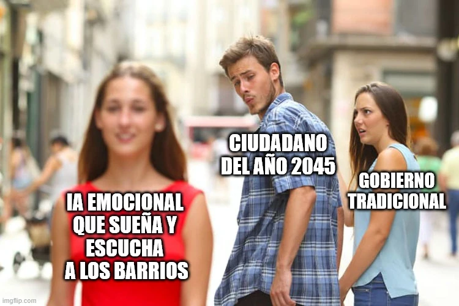

estrategIA #94 ·
Un ciudadano mira hacia otro gobierno
El contexto
El relato, escrito con la IA Grok 4, imaginaba una Ciudad de México de 2045 donde la tecnología ayudaba a escuchar a los vecinos. El ciudadano del meme mira con interés esa promesa mientras deja de lado al gobierno tradicional. Es una comparación dentro de una ficción sobre participación ciudadana.
Publicado en: estrategIA #94 - HistorIAs veraniegas 2025 (2): ríos de esperanza ciudadana, una fábula de gobernanza con Grok 4
Leer el texto de la imagen
IA EMOCIONAL QUE SUEÑA Y ESCUCHA A LOS BARRIOS CIUDADANO DEL AÑO 2045 GOBIERNO TRADICIONAL
Marca de la herramienta visible en el original: imgflip.com.